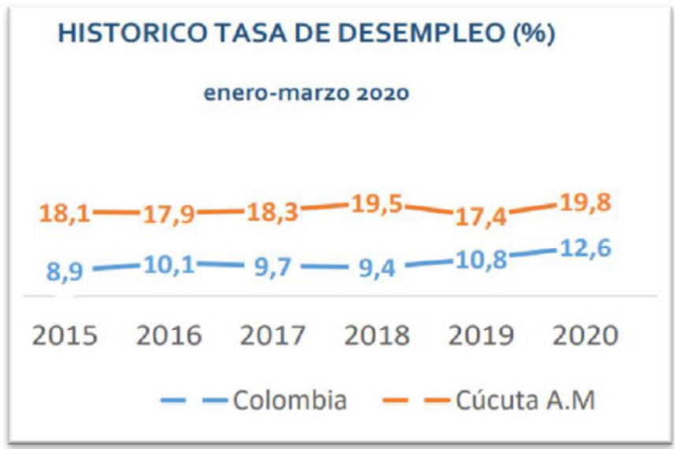
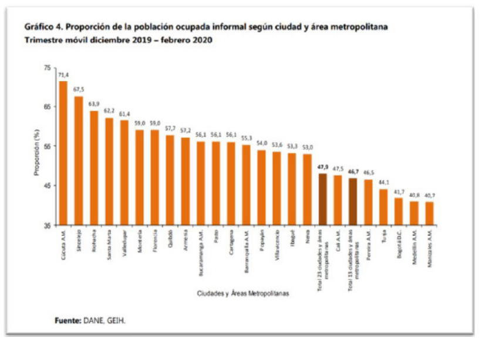
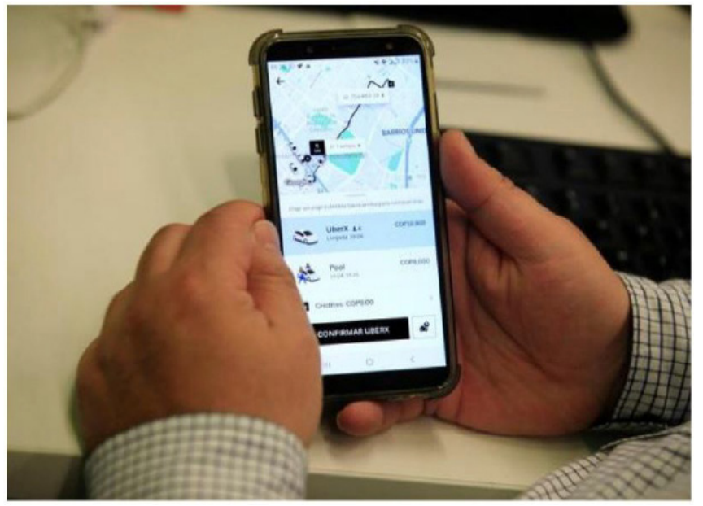
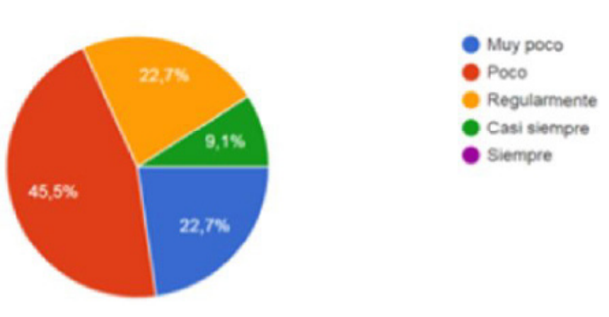
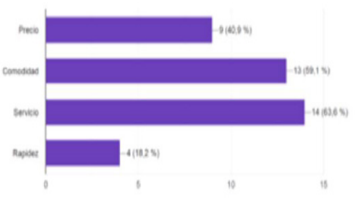
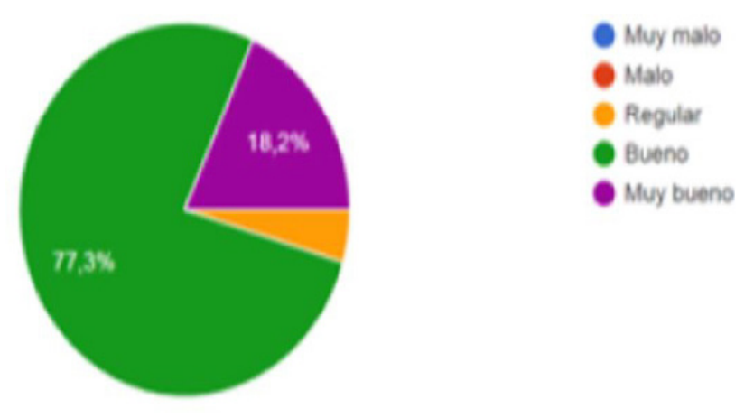
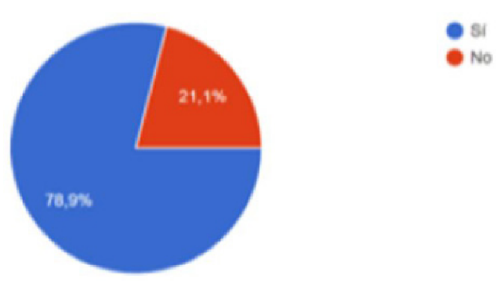
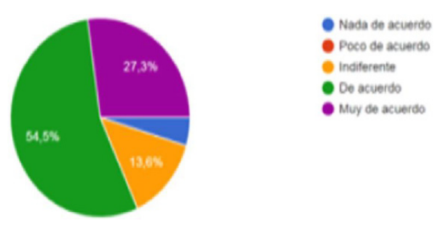

Introducción
En la actualidad, la ciudad de Cúcuta posee un
70% de trabajo informal, el cual ha beneficiado
enormemente a la economía de la misma. La
llegada de plataformas como UBER, In Driver, o
Cabify, ha generado un nuevo tipo de empleo
para los ciudadanos; sin embargo, es de
destacar que este tipo de trabajo, no ha sido
oficializado, por lo que aún se consideraría
informal. El pasado 31 de enero, la plataforma
UBER fue obligada a salir del país, debido a
un decreto presentado en diciembre del
2019, por una tutela impuesta por ASOTAXIS,
quienes ven éste servicio como su perdición.
Su salida, dejó a más de 600 cucuteños, que
operaban como conductores de la plataforma
UBER, en el desempleo. El 20 de Febrero del
2020, UBER volvió a Colombia, presentando
un mejorado servicio tanto para trabajadores,
como clientes. (Narváez 2018).
Con lo anterior mencionado se ha llegado a ver
la fuerte competencia que tiene UBER sobre
los servicios de transportes cotidianos como
lo son los TAXIS, ya que son los principalmente
afectados gracias a que los usuarios declaran
que en servicio al cliente, amabilidad y eficacia
es más óptimo el servicio de UBER a partir de
fuertes declaraciones frente al mal servicio
y pésimo trato de los conductores de TAXIS
hacía sus pasajeros.
La razón por la cual se hizo esta investigación,
es para conocer la incidencia que tiene la
plataforma UBER dentro de la economía
de Cúcuta, dado que un gran afluente de
personas presta sus servicios en éste nuevo
tipo de negocio. Se ha investigado estadísticas
y percepción del usuario para poder establecer
los parámetros de incidencia en la economía
de la ciudad. La actual investigación plantea
ser un precedente para futuras investigaciones
de incidencia económica de plataformas
digitales en la ciudad de Cúcuta, debido a que anteriormente no se tenía artículos
relacionados a ésta temática. (Ossa 2017).
Bases teóricas
Para poder entender las dinámicas del retorno
de UBER a Colombia y su incidencia dentro
del marco comercial y económico dentro
de la ciudad de Cúcuta, es importante tener
en cuenta ciertos aspectos que permitirán
obtener un análisis más amplio acerca de la
investigación.
Desempleo en Cúcuta
El desempleo sigue siendo uno de los
principales problemas a nivel nacional y es claro
que dada la situación actual, sea peor. La tasa
de desocupación nacional en marzo del 2020,
presentó un aumento de 1,8 p.p con respecto
al año anterior, ubicándose en 12,6%. Cúcuta
por su parte, representaría un tercer lugar a
nivel nacional con un 19,8%, una cifra que
superó incluso la dada en el 2018 (de 19,5%),
pero que se evidencia más esto con respecto
al año 2019 con un 17,4% (Figura 1). Lo cual
indica que Cúcuta y su área metropolitana,
sigue teniendo los más altos índices de
desempleo en el país. Comercio, reparación
de autos, manufactureras fueron los sectores
que presentaron los índices más altos de
ocupación, sin embargo, siguen siendo bajos
números a comparación de la informalidad
presentada en la ciudad. (Coronel 2005).

Imagen 1. Historico del desempleo
Fuente: Cámara comercio Cúcuta 2020
Las cifras son preocupantes, pero claras al
momento de entender que la ciudad afronta
actualmente uno de los picos más alto de
desempleo que se han visto en la región.
Una razón de esto está dado por el cierre de
fronteras y el aumento de informalidad en
la ciudad de Cúcuta. Aun siendo frontera, el
cierre de ésta genera grandes pérdidas en la
ciudad y en la región.
Tasa de informalidad en la ciudad
Cúcuta cuenta con la tasa más alta de
informalidad del país, llevando un histórico
71,4%, debido a que las garantías de los
trabajos formales, no son suficientes para
establecerse en uno. Es por ello, que el cucuteño
promedio se adecúa a estos trabajos que de
cierta manera, no poseen las herramientas
necesarias para garantizar su seguridad, sin
embargo, es la única opción que le queda
para obtener sustento. La llegada de UBER a
Colombia, permitió otro tipo de trabajo de
informalidad, el cual permitió a más de 600
cucuteños, trabajar dentro de la plataforma.

Imagen 2. Población ocupada
Fuente: DANE 2020
Cúcuta volvió a ser la ciudad con más
informalidad laboral. Los datos revelan que
de los 10.000 nuevos ocupados en 2019,
solo 1.000 entraron al mercado formal. Esto
quiere decir que en total 9,000 desempleos
se aumentaron a la cifra en la ciudad,
generando preocupación en la economía.
(Avalos 2015). “En la ciudad hubo una
reactivación de la generación de empleo
en el sector manufacturero, en el caso del
calzado, los plásticos y la confección”, dijo
Juan Daniel Oviedo, director del DANE. Sin
embargo, esto solo quiere decir que son
esos sectores los que han permitido los 1000
empleos formales de los 10,000 ocupados.
(Castro 2016).
Nuevas estrategias de UBER
UBER se replanteó para poder volver con
las medidas que considera necesarias para
establecerse dentro del marco económico
de la ciudad. Es por eso, que aplicó nuevas
estrategias con el fin de garantizar un mejor
servicio. Entre las nuevas medidas que
empezó a poner en marcha la plataforma
de UBER (Chavez 2016). y lo innovador, es el
hecho de alquilar un vehículo con conductor,
esto significa que se hace un contrato tanto
con el usuario como con el prestador del
servicio. (Hernández 2018), Para el que
trabaja con la plataforma, puede colocar su carro a disposición de la empresa y éste le hace
firmar un contrato por parte y parte donde
se le asegura que su auto tendrá las medidas
necesarias de control. Ahora, por parte del
usuario, deberá “firmar” o aceptar un contrato
en el momento en que pida el servicio, es
decir, con un clic adicional, acepta los términos
y condiciones ofrecidos por la plataforma y el
arrendatario del auto.(Monsalve 2019).
Dicho contrato durará lo que dure el viaje
asignado o deseado. Una vez finalizado,
terminará el contrato de ése usuario y volverá a
repetirse el mismo proceso con el siguiente. En
un correo electrónico enviado a sus usuarios,
la empresa informa que cada contrato cuenta
con un seguro que cubre “responsabilidad civil”
y “accidentes personales”. Adicional, ofrece los
siguientes servicios:
- Por Horas: El cliente puede alquilar un vehículo
con conductor y pagarlo por el tiempo en que
desee.
- Uber YA: Se alquilará un vehículo con
conductor para poder moverse de manera
más rápida.
- Economy: Se alquilan vehículos con
conductor, pero se busca modelos de autos no
tan recientes para minimizar los costos.
- Comfort: La alternativa Premium permite
alquilar vehículos más modernos con
conductor.
- XL: Ideal para viajes en grupo. El precio del
arrendamiento del vehículo, se puede dividir
entre todos los que hagan parte del viaje.
(Castro 2015)

Imagen 3. arrendamiento de vehículos
Fuente: (Tiempo 2020)
Para los usuarios de UBER, el retiro de la
plataforma afectó no solo la economía de la
ciudad, sino también obligó a aquellos usuarios
a volver a un sistema que para ellos, presenta
muchas falencias, como es el gremio de Taxis.
Si bien, las nuevas medidas impuestas por
UBER pueden cambiar el hecho de que hayan
más trabajadores, es necesario entender que
la ciudad ya se adecuó a éste nuevo negocio.
Para comprender mejor todo esto, se dispone
en ésta investigación de una encuesta realizada
a usuarios y prestadores del servicio, donde se
visualiza la percepción que tienen estos del
regreso de UBER a Colombia y su incidencia
en la ciudad. (Lesmes 2020).
Actualmente el país atraviesa una pandemia
mundial, por lo que incluso servicios como
UBER han tenido que frenar sus actividades
laborales completamente durante la
emergencia; sin embargo, el 15 de mayo del
2020 anunció que reestablecerá sus funciones
a la normalidad. Todo esto, bajo las medidas
necesarias de seguridad decretados por
el Gobierno Nacional. (Abascal 2009). El
conductor que preste el servicio debe certificar
que está autorizado para salir, es decir, debe
contar con los permisos respectivos por parte
de las autoridades para prestar esta opción
de movilidad. (Carballo 2017). El conductor
también debe probar que está usando un tapabocas a través de una fotografía, que debe
compartir con Uber para que valide el servicio.
El pasajero también deberá hacer un chequeo
de que los protocolos establecidos estén
siendo respetados, como la limpieza del auto,
como el lavado de manos. En cada vehículo
pueden ir como máximo dos pasajeros, con
tapabocas, que deben desinfectarse con gel
antibacterial antes y después de subirse al
vehículo. Esto garantiza que se brinde un
buen servicio y que adicional, se pueda seguir
operando con total normalidad aún en ésta
emergencia mundial. (Castro et al 2018).
Materiales y métodos
Para ésta investigación se planteó el uso de
datos cuantitativos, debido a que se usó
al DANE y a la Cámara de Comercio para
establecer la información pertinente en
cuanto a los índices de desempleo y tasa de
informalidad en la ciudad de Cúcuta. Además,
se usó la encuesta para obtener los datos
cualitativos, que corresponden a la percepción
del cliente con referente al producto-servicio
que presta UBER. Se realizó ésta herramienta
de recolección de datos de un total de 22
encuestados, entre los que se encuentran
usuarios y prestadores de servicio dentro de la
plataforma UBER.
Resultados y análisis
Se realizó una encuesta a 22 personas para
conocer la percepción que tienen de la
plataforma UBER y se analizaron los resultados.
La encuesta está dirigida a usuarios y a
prestadores del servicio de UBER.

Imagen 4. ¿Con que frecuencia usa los servicios de Uber?
Fuente: los autores.
Se puede observar en la imagen 4 que aun
cuando la mayoría de los encuestados usa
poco o muy poco el servicio, igual lo han usado,
siendo así que se determina la participación
de ésta plataforma por parte de los usuarios
en la ciudad de Cúcuta. Un muy poco abarcó
un 22,7% (5 votos), Poco un 45,5% (10 votos),
Regular 22,7% (5 votos) y Casi siempre con un
9,1% (2 votos).
Desarrollo

Imagen 5. ¿Cuales son los factores más llamativos de Uber?
Fuente: los autores.
Para llegar a conocer mejor la percepción del
usuario y del prestador del servicio dentro de
la plataforma, se determinaron los factores
más importantes que ven. Para ésta pregunta
se dejó la opción de múltiple respuesta para
que se tuviese un estándar de respuestas
varias. Los resultados muestran que un 63,6%
(14 votos) consideran que es más llamativo
el Servicio que ofrece UBER, mientras que la
Comodidad tuvo un 59,1% (13 votos), Precio
40,9% (9 votos) y Rapidez un 18,2% (4 votos).

Imagen 6. El trato que se ofrece a los clientes es:
Fuente: los autores.
Confirmando lo anterior, los usuarios del
servicio de UBER sienten que la atención y
el trato que se les ofrece son, en su mayoría,
buenos. La percepción de Bueno, está con un
77,3% (17 votos), Muy bueno un 18,2% (4
votos) y Regular un 4,5% (1 voto).

Imagen 7. Si usted presta sus servicios dentro de la plataforma Uber,
¿considera que las nuevas medidas implementadas por la empresa son
adecuadas?
Fuente: los autores.
Ésta pregunta iba dirigida principalmente
a prestadores de servicio en la plataforma
UBER, por lo que era la única no obligatoria
de responder en la encuesta. Con un
78,9% (15 votos), aquellos que prestan sus
servicios dentro de la plataforma se sienten
conformes con las nuevas estrategias que
desea implementar UBER. Mientras que
con un 21,1% (4 votos), estos mismos no se
sienten satisfechos o no están de acuerdo
a las medidas que la plataforma está
implementando.

Imagen 8. ¿Esta de acuerdo con el ingreso de Uber a Colombia?
Fuente: los autores.
Es importante conocer la idea que tiene el
consumidor con respecto al regreso de UBER
a Colombia, así que según la encuesta, el
usuario se siente muy de acuerdo de que la
plataforma haya vuelto a funcionar dentro
del territorio nacional y aún más, dentro de
la ciudad. Cúcuta ha venido sufriendo los
cambios en la economía del país y la llegada
de éstas plataformas generaron un nuevo tipo
de empleo informal que de por sí, contribuye
en mayor medida con la economía de la
ciudad. Un Muy de acuerdo con un 27,3% (6
votos), un De acuerdo se ratifica con un 54,5%
de las respuestas (12 votos). Por otro lado, una
minoría como tal, se encuentran Indiferentes
con un 13,6% (3 votos) y Nada de acuerdo con
un 4,5% (1 voto).
Imagen 9. ¿Considera usted que las plataformas como Uber, benefician la
economía de la ciudad de Cúcuta
Fuente: los autores.
Con una absoluta respuesta, tanto de usuarios
como aquellos que prestan sus servicios dentro
de la plataforma, la ciudad se ve beneficiada
en gran medida con el retorno de UBER a Colombia. Si bien es de entender que no solo
da un respiro a aquellos que creían haberlo
perdido todo cuando la plataforma se fue en
Febrero, sino que también le genera a la ciudad
un cambio positivo en materia económica,
beneficiando así el mayor mercado que se
maneja en Cúcuta, que es la informalidad.
Conclusiones
La información recolectada por la encuesta
y las estadísticas del DANE y la Cámara de
Comercio, demostraron que Cúcuta basa
su economía por medio de la informalidad,
siendo así que plataformas digitales de
servicio vehicular, terminan incidiendo de
manera directa en la economía de la ciudad.
UBER durante sus 20 días fuera del servicio
en el país, afectó de manera considerable a
los más de 600 cucuteños que prestaban sus
servicios en la plataforma. Si bien regresó el
pasado 20 de Febrero, lo hizo renovando sus
servicios, lo cual tiene cierta incertidumbre de
lo que puede llegar a ser éste cambio en un
futuro, debido a que, como se demostró en
la encuesta realizada a usuarios y prestadores
del servicio, no todos están de acuerdo con las
nuevas medidas que la empresa adoptó; sin
embargo, algo es seguro y es que terminará
teniendo un impacto en la economía local otra
vez.
Referencias
- Abascal, Arturo (2009), “El servicio público de
taxi”, en Régimen Jurídico del Urbanismo.
Memoria del Primer Congreso de Derecho
Administrativo Mexicana. Fernández Ruíz,
Jorge; Germán Cisneros Farías y Filiberto Otelo
Salas (coord.), México, unam, pp. 225-257.
- Ávalos, Marcos y Paula Sofía (2015), “Baby, you can
(´t) drive my car. El caso de Uber en México”,
en Economía informa, núm. 390, enero-febrero
2015, pp. 104-112.
- Castro, Miriam (2015), “Traxi: una app para
saber si tu taxi es confiable”, en Milenio.
com, 15 de junio, México, en http://www.milenio.com/negocios/emprendedores/ubertaxis_cdmx-taxistas_df-usuarios_ubertraxicabify_0_536946489.html
, consultado el 1 de
julio de 2015.
- Chávez, Orlando (2016), “UBER llega como una
alternativa de transporte”, en El Diario, lealtad
a Chihuahua, en http://eldiariodechihuahua.mx/Estado/2016/06/21/desplaza-a-3-milviolencia-en-sinaloa/
, consultado el 22 de
julio de 2016.
- cnn Expansión (12/06/2015), “Las ciudades
que le han cerrado las puertas a Uber”,
México, en http://www.cnnexpansion.com/tecnologia/2015/06/10/las-controversiasdeuber
, consultado el 20 de junio de 2015
- Castro Correa, J. A., Sepúlveda Mora, S. B.,
Medina Delgado, B., & Guevara Ibarra, D.
(2018). Servicio web para la geolocalización
de los vehículos de transporte público en la
ciudad de Cúcuta. Respuestas, 23(S1), 29-37.
https://doi.org/10.22463/0122820X.1498
- Castro Alfaro, A. (2016). Estrategias para la
disminución de la carga impositiva en las
organizaciones empresariales. Enfoque
Disciplinario, 1(1), 21-34. Recuperado a partir
de http://enfoquedisciplinario.org/revista/index.php/enfoque/article/view/6
- Carballo Mass, E. (2017). Modelo de negocio
para una tienda virtual de venta de llantas
al sector público mediante la modalidad
de contratación. Conocimiento Global,
2(1), 20-40. Recuperado a partir de http://conocimientoglobal.org/revista/index.php/cglobal/article/view/14
- Coronel López, Jorge E. (2005). EL DESEMPLEO
EN COLOMBIA Y SU METODOLOGÍA
DE CÁLCULO ¿DISIMULO A UN GRAVE PROBLEMA?. Semestre Económico, 8(15),136-
150.[fecha de Consulta 17 de Marzo de 2021].
ISSN: 0120-6346. Disponible en: https://www.redalyc.org/articulo.oa?id=1650/165013659008
- El Tiempo (2020). Contrato de arriendo, la sorpresa
con la que Uber reta a Mintransporte. Recuperado
de: https://n9.cl/e57o
- Hernández Royett, J., Hernández, Y. F., Gil, M.
de los A., & Cárdenas Barboza, E. (2018).
Evaluación del modelo integrado de planeación y
gestión (MIPG) en las entidades territoriales del
estado colombiano. Aglala, 9(1), 444-463. http://revistas.curnvirtual.edu.co/index.php/aglala/article/view/1255
- Lesmes Silva, A. K., Barrientos-Monsalve, E. J.,
& Cordero Díaz, M. C. (2020). Comunicación
asertiva ¿estrategia de competitividad
empresarial?. Aibi Revista De investigación,
administración E ingeniería, 8(1), 147 - 153.
https://doi.org/10.15649/2346030X.757
- Monsalve, B. (2019). Theorization on case studies in
business intelligence management on intellectual
capital. Journal of Physics: Conference Series,
1160(1).
- Narváez, B., Arrieta, Y. & Flores, B. (2018). El caso
del aplicativo móvil Uber frente al régimen de
protección a la competencia en la legislación
colombiana. Revista Justicia, 23(33), 37-50.
https://doi.org/10.17081/just.23.33.2881
- Ossa Bocanegra, Camilo ErnEsto (2017). Economías
colaborativas: regulación y competencia.
Revista de Derecho Privado, (57),1-22.[fecha
de Consulta 17 de Marzo de 2021]. ISSN: .
Disponible en: https://www.redalyc.org/articulo.oa?id=3600/360055996008
- Santaella Pérez, H (2020) Informe de Estudio
Económico de las Zonas. Cámara de Comercio
Cúcuta. Recuperado de: https://www.cccucuta.org.co/media/Publicaciones/informe_estudio_economico_de_la_zona_dic_2019.pdf
- Vega-Ortega , C., Medina-Gómez, D., & Duarte,
D. (2018). Revisión de la seguridad vial en la
Av. 3E entre las calles 2N y 6N en la ciudad
de Cúcuta para medir los riesgos a los que
están expuestos los usuarios. Sostenibilidad,
Tecnología Y Humanismo, 9(1), 8-15. https://doi.org/10.25213/2216-1872.55